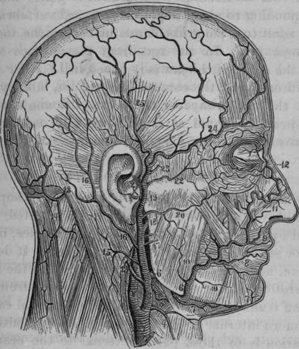

External Carotid Artery
Description
This section is from the book "Anatomy Of The Arteries Of The Human Body", by John Hatch Power. Also available from Amazon: Anatomy of the Arteries of the Human Body, with the Descriptive Anatomy of the Heart.
External Carotid Artery
This artery usually arises nearly opposite the superior margin of the thyroid cartilage; it is situated, until crossed by the digastric and stylo-hyoid muscles, in the anterior superior lateral triangle of the neck. It derives its name, not from its position with regard to the internal carotid at the origin of these vessels from the common trunk, for in this situation the external carotid is the more internal of the two, but because its ultimate destination is to those parts external to the cranium, whilst the destination of the internal carotid is principally to the parts contained within this cavity. The external carotid may be divided into two stages, the first extending from its origin to the lower part of the parotid gland; and the second where the artery lies within the substance of this gland. After its origin it ascends towards the sub-maxillary gland, but afterwards turns outwards, and plunges into the parotid gland, through which it ascends as far as the neck of the inferior maxillary bone, where it terminates by dividing into the temporal and internal maxillary arteries. In this course it describes a curvature, the convexity of which looks upwards, backwards, and inwards towards the tonsil. In its first stage, before it reaches the parotid gland, its cutaneous surface is at first comparatively superficial, being covered by the skin, platysma myoides, and cervical fascia; by the union of the temporo-max-illary with the facial vein at the commencement of the external jugular; it is then covered a little higher up by the posterior belly of the digastric muscle, the stylohyoid muscle, and the hypo-glossal nerve. At its commencement it lies in front of the superior laryngeal nerve, and the longus colli and rectus capitis anticus major muscles. On its outer side we find the internal carotid artery, internal jugular vein, and pneumogastric nerve. On its inner side we find the superior cornu of the thyroid cartilage, the posterior margin of the thyrohyoid ligament, the great cornu of os hyoides, the side of the pharynx, the sub-maxillary gland, angle of the jaw, and still more internally the tonsil. After it has entered into the substance of the parotid, it is covered by the skin, the platysma, the cervical fascia, a portion of the gland, by its corresponding vein, namely, the temporo-maxillary, and by the facial nerve. Its deep surface is here separated from the internal carotid by the stylo-glossus and stylo-pharyngeus muscles, the styloid process, or, when this process is short, by the stylo-hyoid ligament, the glosso-pharyngeal nerve, and occasionally the pharyngeal branch of the pneumogastric nerve, and part of the gland.
Fig. 10. The External Carotid Artery and its Branches.
1, Right Common Carotid. 2, Internal Carotid. 3, External Carotid. 4, Superior Thyroid. 5, Liugual. 6, Facial. 7, Submental. 8, Inferior Coronary. 9, Superior Coronary. 10, Muscular Branches. 11, Lateral Nasal Artery. 12, Angular Artery. 13, Occipital Artery. 14, Descending Cervical. 15, Muscular Branch. 16, Posterior Auricular Artery. 17, Parotid Branches. 18, Internal Maxillary. 19, Temporal. 20, Transverse Facial. 21, Anterior Auricular. 22, Supra-orbital. 23, Middle Temporal. 24, Anterior Temporal. 25, Posterior Temporal Artery.
Continue to:
- prev: Operation Of Tying The Common Carotid In Its Superior Stage
- Table of Contents
- next: Operation Of Tying The External Carotid